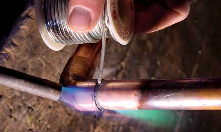

STEVE MAXWELL
Regardless of the metal the solder is made from, the soldering process always involves the same three steps: Clean and heat the metal, add solder and then let the joint connection cool and harden.